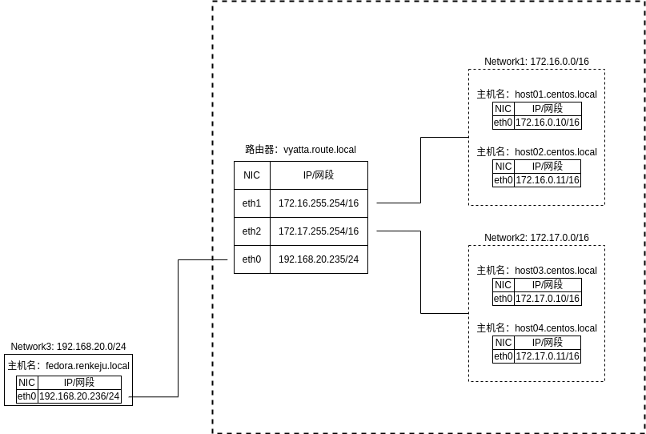

附录A 创建虚拟环境¶
A-1 虚拟化概要¶
什么是虚拟化¶
虚拟化（Virtualization）是一种虚拟配置技术，它可以结构计算机系统（如硬件、服务器、存储和网络）的具有原始配置的独立资源，并以分割或合并的方式来实现。
结构 |
状态 |
说明 |
|---|---|---|
服务器 |
分割 |
拆分一台服务器以配置多台服务器 |
合并 |
将多台服务器配置为一台服务器 |
|
存储设备 |
分割 |
将一个磁盘拆分为多个独立的磁盘 |
合并 |
将多个磁盘多为一个磁盘 |
|
网络 |
分割 |
将一个LAN拆分为多个LAN |
合并 |
将多个网络设备整合为一个网络设备 |
结构❶
数据库服务和网站服务在运行在不同的裸金属物理服务器上。CPU和内存等资源的利用率较低会导致资源浪费，它们的处理能力也是如此。另外，还需要确保服务器的数量、物理空间位置、电源等等。
结构❷
数据库服务和网站服务软件可以安装在同一裸金属物理服务器中运行。但是，如果由于硬件故障而导致服务器宕机，则在该服务器中运行的所有服务（如本例中的数据库服务和网站服务）都将停止运行。解决此问题需要硬件冗余。另外，如果主机被恶意的第三方入侵，并夺取了root权限，则可能会对所有服务进行篡改等不正当行为。因此，与结构❶和结构❸等服务的分散结构相比，安全性较弱。
结构❸
在一个裸金属服务器中，每台服务器都使用虚拟化技术独立运行。运行操作系统的硬件平台在虚拟化管理程序（Hypervisor）上构建虚拟主机（Virtual Machine），并在其上运行 Guest OS。Guest OS可以为每台虚拟机提供不同的操作系统，并且可以在Guest OS上安装和使用服务软件，如数据库和网站。
基于Linux内核的虚拟化环境包括KVM和Xen。两者都在CentOS和Ubuntu标准网络存储库中提供。VirtualBox和VMware Workstation还可以用于Microsoft Windows、MacOS和Linux的虚拟环境。
管理程序¶
虚拟机管理程序是在其上运行虚拟机的软件。有两种典型类型的虚拟机管理程序：
类型 |
说明 |
|---|---|
裸金属主机 |
即虚拟机管理程序直接在硬件上运行，所有的OS都在该虚拟机管理程序上运行的方式。Xen就是这样。 |
主机类型 |
OS（主机操作系统）在硬件上运行，虚拟机管理程序在OS上运行。VMware Workstation 和 VirtualBox 采用这种类型。 |
注解
KVM是主机操作系统的一个内置虚拟机管理程序功能，但由于Guest OS运行在主机操作系统中的仿真器（QEMU）上，因此是裸金属主机类型和主机类型的中间方法。
云虚拟化¶
云的虚拟机管理程序可以在多台物理服务器的虚拟环境中运行多个虚拟机（VM）实例。虚拟机实例可以运行用户的应用程序。
云上的VM易于创建和删除，可通过根据工作负载情况手动或自动增加或减少VM数量来均衡多台物理服务器之间的处理能力。

Amazon 提供的AWS云（Amazon Web Services）早期使用Xen作为虚拟机管理程序，从2017年开始引入KVM。
Google 提供的云GCP（Google Cloud Platform）使用KVM作为虚拟机管理程序。
容器式虚拟化¶
容器虚拟化与主机操作系统共享相同的内核，在操作系统被隔离的容器的区域中有自己的地址空间，并且它还有自己的存储空间和网络名称空间。
它的特点是，与主机或虚拟机管理程序相比，他的体积更小，没有独立的内核的启动与停止，没有额外的服务启动与停止，并且容器启动与停止的速度更快。
在Google的Gmail到Youtube的视频检索，所有服务都是在容器中运行。
VM在虚拟机管理程序提供的虚拟环境中运行，而容器可以在主机操作系统中运行。

Docker公司开发的Docker容器被广泛用于容器的实现。
另外，将多个Docker容器部署到操作系统中，并使每个容器协同工作的名为Kubernetes的软件也在不断的普及开来，Kubernetes由Google开发并于2014年发布，现在由Cloud Native Computing Foundation(CNCF)管理。
虚拟化软件提供的功能¶
如上所述，虚拟化涉及多种资源，包括存储和网络。有两种方法可以利用虚拟化功能：
利用虚拟化软件提供的功能
利用虚拟化服务器提供的功能
以下是VMware Workstation提供的一些虚拟化功能的参考：以下是使用VMware Workstation创建的虚拟机的“设置”屏幕。

接下来，在“A-2 使用 KVM 构建虚拟环境”与“A-3 使用 VirtualBox 构建虚拟环境”章节中，我们将讨论如何使用虚拟化软件提供的功能来构建虚拟环境。
A-2 使用 KVM 构建虚拟环境¶
什么是 KVM？¶
KVM(Kernel-based Virtual Machine)是一种开源虚拟化环境，嵌入在标准Linux内核（2.6.20或更高版本）中。由于KVM是完全虚拟化的，因此无论主机操作系统类型如何，虚拟机操作系统（Guest OS）都可以安装多种类型操作系统，如Microsoft Windows或Linux。
在KVM上，硬件仿真器由“QEMU”（Queue Emu）完成，QEMU通过 /dev/kvm 文件利用硬件虚拟化辅助功能。
硬件虚拟化辅助功能可通过硬件（处理器）代理软件执行的虚拟化操作，显著降低虚拟化开销。KVM完全虚拟化需要使用硬件虚拟化辅助功能。对于具有硬件虚拟化辅助功能的PC，通常可以在BIOS或EFI配置界面中启用或禁用硬件虚拟化辅助功能。
完全虚拟化和半虚拟化¶
有两种类型的硬件平台虚拟化：
完全虚拟化（Full Virtualization）
完全模拟硬件。无需更改硬件上运行的操作系统即可正常运行。
半虚拟化（Para Virtualization）
模拟几乎与物理主机相同的硬件，但与完全模拟有所不同。提供对硬件仿真进行更改后的驱动，以缩短运行时间。您需要更改Guest OS的驱动程序以支持半虚拟化提供的仿真硬件。
KVM以经被开发为完全虚拟化，但现在可以通过采用半虚拟化驱动程序（VirtIO）等方式实现半虚拟化。
使用 KVM¶
使用KVM在一台物理主机上创建多个虚拟机。虚拟机（VM，Virtual Machine）是由虚拟化软件管理的虚拟计算机。在虚拟机上安装CentOS作为OS。此外，本附录还包括5台VM，因此PC的内存大小必须至少为8GB。
本节介绍如何使用 Minimal ISO(CentOS-7-x86_64-Minimal-1804.iso)安装 CentOS。因此，CUI设置了较少的磁盘供安装使用。
注解
虚线内为虚拟网络，所有VM中，路由器使用Vyatta OS作为Guest OS，host01、host02、host03和host04使用CentOS作为Guest OS。fedora作为本机操作系统。
具体操作过程如下：
安装 KVM
创建虚拟机
在虚拟机上安装CentOS
对虚拟机CentOS作初始设定
使用克隆创建虚拟机
使用NAT网络
同一网络中的通信确认
在虚拟机中配置Vyatta路由器
确认不同网络之间的通信
KVM所需要的软件包¶
KVM要求安装虚拟化软件包。要安装的软件包如下：
要安装的软件包 |
说明 |
主要组件 |
说明 |
|---|---|---|---|
Virtualization Host |
基本环境组 |
libvirtd |
管理Guest OS的启动与停止，网络和存储等。 |
virsh |
基于CUI对Guest OS的管理工具 |
||
virt-install |
GUI工具 |
virt-install |
Guest OS安装程序 |
virt-manager |
virt-manager |
基于GUI对Guest OS的管理工具 |
|
virt-viewer |
virt-viewer |
Guest OS图形控制台 |
|
qemu-kvm |
仿真器 |
qemu-kvm |
Guest OS硬件仿真器 |
注解
“Virtualization Host”是一个软件包组，它将多个软件包合并为一个组。
“Virtualization Host”仅提供基本环境。本附录安装了用于GUI的图形化工具。
安装KVM¶
在CentOS中，安装过程如下：
# yum groupinstall "Virtualization Host" ← ❶
# yum install virt-install virt-manager virt-viewer ← ❷
# yum install qemu-kvm ← ❸
❶ “Virtualization Host”是一个软件包组，必须使用“yum groupinstall”进行安装。这将安装基本环境。
❷ 安装用于GUI交互的工具
❸ 安装仿真器QEMU。在安装CentOS时，“qemu-kvm”将与“qemu-guest-agent”一起进行相关安装，但它还将执行更新命令。
Ubuntu 提供了一种通过GUI进行安装的简便方法。
在桌面左侧的图标中选择“Ubuntu Software”。查找并选择“Virtual Machine Manager”，然后按照GUI中的说明进行安装。
注解
如果在“Ubuntu Software”中搜索“Virtual Machine Manager”时未看到，请使用以下命令更新软件包列表并配置未配置的软件包，然后在“Ubuntu software”中再次搜索。
$ sudo apt-get update ← 更新软件包
$ sudo dpkg --configure -a ← 以部署的软件包设置
创建虚拟机¶
将虚拟机中创建Guest OS。在本小节中，我们将使用虚拟机管理器（virt-manager）创建一个新的虚拟机，该管理器允许您通过GUI管理Guest OS。以下示例创建了主机host01。
操作系统镜像安装
在本附录中，您将下载ISO镜像文件并将其安装在虚拟机上。因此，在主机OS上准备安装CentOS所需的ISO镜像文件。在本例中我们将下载CentOS-7-x86_64-Minimal-1804.iso
在本例中，我们将使用“最小安装”配置进行安装。此外，假定下载的文件（CentOS-7-x86_64-Minimal-1804.iso）位于以下位置：
/home/renkeju/download/CentOS-7-x86_64-Minimal-1804.iso启动虚拟机管理器
按照以下方式启动虚拟机管理器：
CentOS: “应用程序”➜“系统工具”➜“虚拟机管理器”
Ubuntu: “应用程序菜单”➜“虚拟机管理器”
启动时，系统将提示您验证root或sudo用户，因此请输入该用户的密码。
创建虚拟机
虚拟机管理器顶部的图标按从左到右的顺序显示，用于：
创建新虚拟机
打开选定虚拟机的控制台屏幕
启动选定的虚拟机
暂停选定的虚拟机
关闭选定的虚拟机
在本例中，我们将创建一个虚拟机，然后选择“创建虚拟机”。
选择安装Guest OS的方式
选择“本地安装介质”以使用预先下载的ISO镜像文件作为安装介质。
注解
创建新虚拟机时，如果策划县如下图所示的警告，则可能已禁用“硬件虚拟化帮助”。要启用硬件虚拟化辅助功能，请在BIOS或UEFI配置界面中启动硬件虚拟化支持（VT, Virtualization Technology）。
选择 ISO 镜像文件
选取准备号的ISO镜像文件。在本例中，选择位于
/home/renkeju/download目录下的ISO镜像文件（在本例中为 CentOS-7-x86_64-Minimal-1804.iso）。此外，选中“根据安装介质自动确定虚拟机中的操作系统类型”，以便自动确定操作系统类型。内存大小和CPU
设置分配给虚拟机的内核和CPU。假定内存设置为1024MB，CPU设置为1。
创建硬盘
配置虚拟机要使用的虚拟硬盘。在本例中，我们将创建一个新的硬盘，然后选择“为虚拟机创建磁盘镜像”，输入“8.00GB”作为大小。
注解
默认情况下，KVM会创建的磁盘镜像位置于
/var/lib/libvirt/images/下。名称和网络
输入“CentOS-host01”作为该计算机的名称。在”选择网络“下拉列表中，选择虚拟网络“default: NAT”。下面将介绍NAT连接。
虚拟机创建完成
创建完虚拟机后，虚拟机将显示在虚拟机管理器中并启动。在下面的屏幕中，您可以看到您创建的“CentOS-host01”。至此，您已完成了虚拟机的创建。